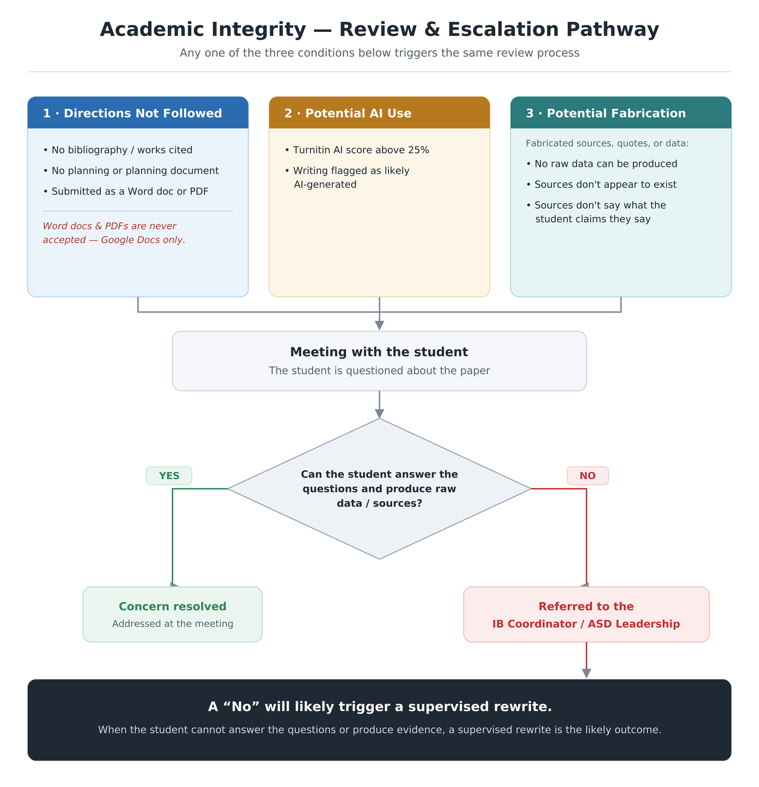

Which year is your child in? Pick your track — tonight’s content is tailored to each.
You can switch tracks any time using the tabs at the top.
How we know what we know — and how far we can trust it. Critical thinking across every subject.
A 4,000-word independent research paper on a question your child chooses.
Learning by doing beyond the classroom — and giving back.
The Core is how these ten attributes get practiced — not just named.
A 4,000-word research paper on a question your child chooses, mentored by a supervisor. Their first real taste of university-level independent research.
It teaches how to ask a good question, gather and weigh evidence, and sustain a line of reasoning.
Learning that happens outside the classroom: something creative, something physical, and something that serves others.
Students plan experiences, reflect on them, and collect evidence in a portfolio — it’s about growth, not hours logged.
The hardest and most interesting piece. TOK asks one deceptively simple question:
“How do you know that’s true?”
Not what to think, but how we come to know — and where knowledge can be trusted, doubted, or misused. Here are a couple of examples…
We didn’t take Turnitin’s word for it — we tested it ourselves, and it was accurate.

Our approach to AI and integrity is a fair, consistent process. Any flag — missing citations, a high AI score, or sources that don’t check out — leads first to a conversation. If a student can explain their work and produce their sources, it’s resolved.
Thank you for being here tonight.
Your child already knows the Core. Year 2 is about bringing all three pieces across the line — with the TOK essay as our big focus.
With the EE draft in, the TOK essay is the heaviest remaining lift — we scaffold it across many classes.
We didn’t take Turnitin’s word for it — we tested it ourselves, and it was accurate.
With final assessments on the line, this matters most now. Any flag leads first to a conversation — if a student can explain their work and produce their sources, it’s resolved. Producing your process is the protection.
Thank you for being here tonight.